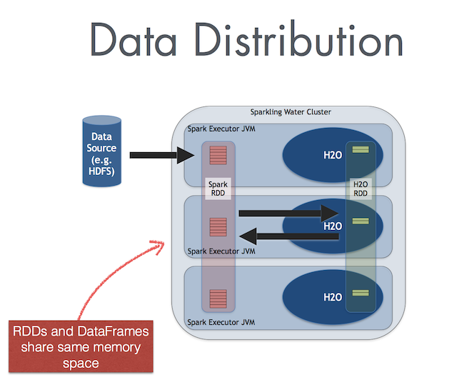

Data Sharing¶
Sparkling Water enables transformation between different types of Spark’s RDD and H2O’s H2OFrame, and vice versa.
Conversion Design¶
When converting from H2OFrame to RDD, a wrapper is created around the H2OFrame to provide an RDD-like API. In this case, no data is duplicated; instead, the data is served directly from the underlying H2OFrame.
Conversion in the opposite direction (i.e, from Spark RDD/DataFrame to H2OFrame) requires evaluation of the data stored in the Spark RDD and then transferring that from RDD storage into H2OFrame. However, data stored in H2OFrame is heavily compressed.
Exchanging the Data¶
The way that data is transferred between Spark and H2O differs based on the used Sparkling Water backend. (Refer to Sparkling Water Backends for more information about the Internal and External backends.)
In the Internal Sparkling Water Backend, Spark and H2O share the same JVM, as is depicted in the following figure.

In the External Sparkling Water Backend, Spark and H2O are separated clusters, and data has to be sent between those clusters over the network.
Memory Consideration When Converting Between Data Frames Types¶
When Using Sparkling Water External Backend:¶
If you have allocated the recommended memory amount to your H2O cluster (4 x the size of your dataset), you don’t need to worry about memory constraints when converting between a Spark DataFrame and an H2OFrame; there is no collision with Spark storage.
Note: the 4 x the size of your dataset assumes your dataset is represented as a CSV. If your dataset is represented as JSON, XML or parquet, the requirements may differ significantly.
When Using Sparkling Water Internal Backend:¶
In the internal backend mode, H2O-3 shares the JVM with Spark executors. In this case, you will want to allocate enough memory to run Spark transformations on your DataFrame (which means allocating a minimum memory of your dataset and memory for those transformations), plus allocate an additional 4 x the size of your dataset.
Note: there is data duplication when you convert between a Spark DataFrame and an H2Oframe (though H2O uses compression tricks to help reduce the memory requirements for this conversion); there is no data duplication when you convert between an H2OFrame and a Spark DataFrame because Sparkling Water uses a wrapper around the H2OFrame, which uses the RDD/DataFrame API.